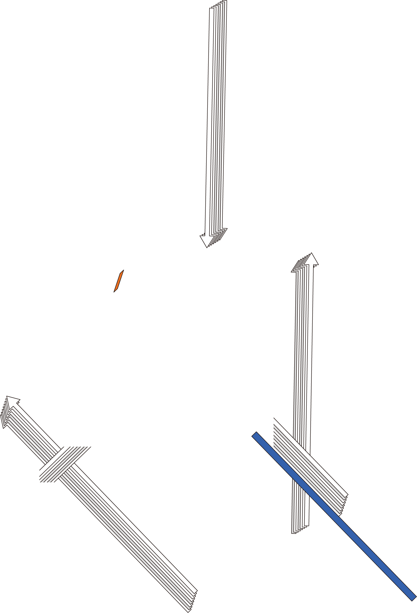
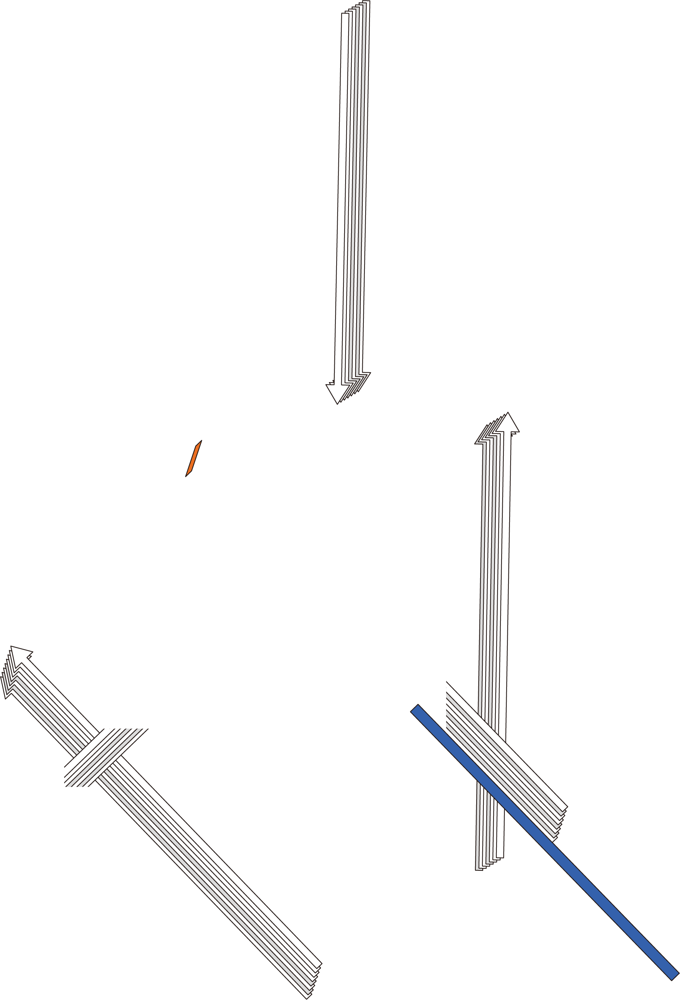

길, 잃어버렸습니다
윤동주 시인의 <길>은 일제강점기에 방황하는 청년의 상을
담고 있다.
‘잃어버렸습니다’는 <길>을 여는 첫번째 문장이다. 화자는
무언가를 잃어버렸다고 자각하고 있지만 그 잃어버린 무언가가
무엇인지는 모른채 막막한 현실 속에서 방황하고 있다. 현 시대의
청년들도 마찬가지다. 자신이 진정으로 추구해야 할 가치가
무엇인지에 대한 확신이 없다.
<길, 잃어버렸습니다>는 이처럼 인생의 길을 잃은 청년들의
상황을 시각적으로 나타내고자 한 작품이다. 매듭처럼 교차하는
중첩된 화살표들은 우리가 가야할 길을 가리키는 표지인 동시에
우리의 앞을 가로막는 담이다. 인생의 나침반처럼 여겨지는 여러
조언과 관습이 어쩌면 진정으로 추구해야 할 가치로부터 우리를
유리시키는 방해물일 수도 있다.
그러나 <길>의 화자가 담 너머의 이상을 찾기 위해 고통스러운
방황을 이어나가자 다짐하는 것처럼, 우리도 담 너머에 있으리라
믿는 무언가를 위해 잃어버린 길을 더듬어 계속 나아갔으면 한다.